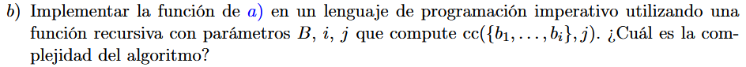
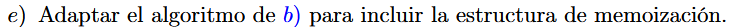
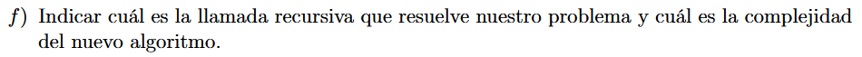

Defino \(\prec\) como el orden \(c',q'\) tal que \(\min\limits_{\prec}\) implica ver primero el mínimo valor \(c'\) y luego, el mínimo \(q'\) para “desempatar”
\[\text{ cc}(B,c) = \begin{cases} (0,0)\text{ si }c \leq 0 \\ (\infty,\infty)\text{ si }B = \varnothing \land c > 0 \\ \min\limits_{\prec}\left\{ \left( \max(0,c' + b_{n} - c),q' + 1 \right),\text{cc}\left( B - \left\{ b_{n} \right\},c \right) \right\}\text{ si }c > 0 \land B \neq \varnothing \end{cases}\]
\[(c',q') = \text{ cc}\left( B - \left\{ b_{n} \right\},c - b_{n} \right)\]

TO DO
 \(B = \left\{
b_{1}\ldots b_{n} \right\}\)
\(B = \left\{
b_{1}\ldots b_{n} \right\}\)
\[\text{ cc}'_{B}(i,j) = \begin{cases} (0,0)\text{ si }j \leq 0 \\ (\infty,\infty)\text{ si }i = 0 \land j > 0 \\ \min\limits_{\prec}\left\{ \left( \max(0,c'' + b_{i} - j),q'' + 1 \right),\text{cc}'_{B}(i - 1,j) \right\}\text{ si }i > 0 \land j > 0 \end{cases}\] \[(c'',q'') = \text{ cc}'_{B}\left( i - 1,j - b_{i} \right)\]

Definimos una matriz de tamaño \((n + 1) \cdot (c + 1)\) tal que cada posible combinación de cantidad de billetes (\(0...n\)) y costos (\(0...c\)) sea accesible en \(O(1)\)
La complejidad de esto es \(O(n \cdot c)\)

TO DO

\(\text{cc}'_{B}(n,c)\) resuelve el problema.